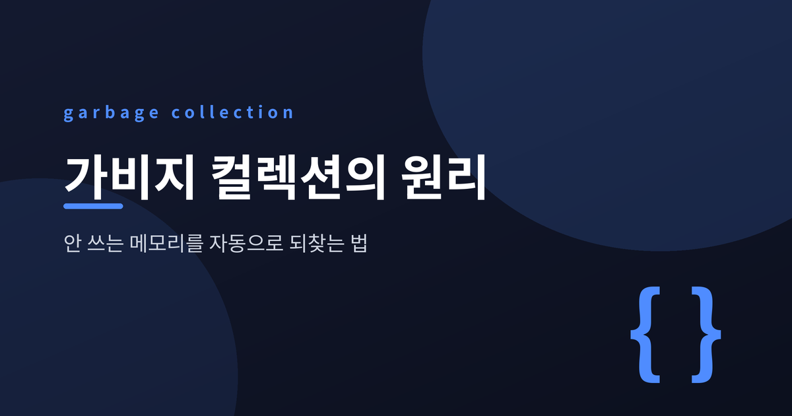
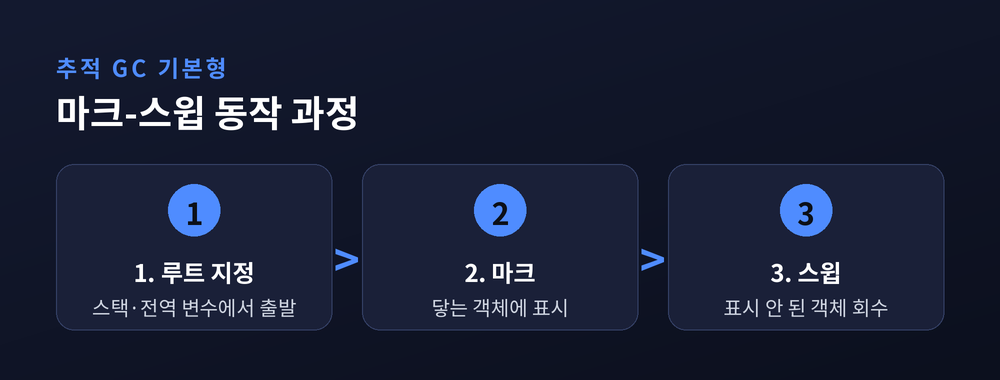
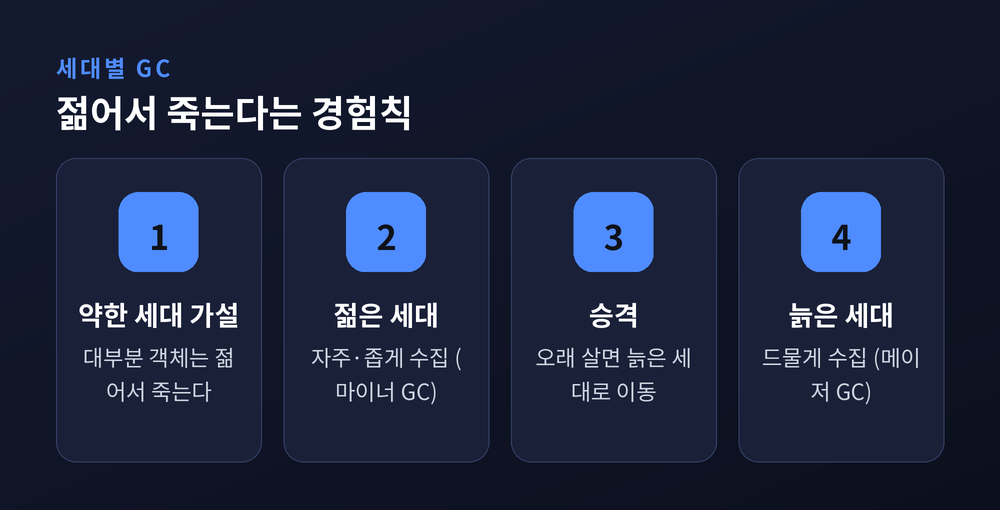
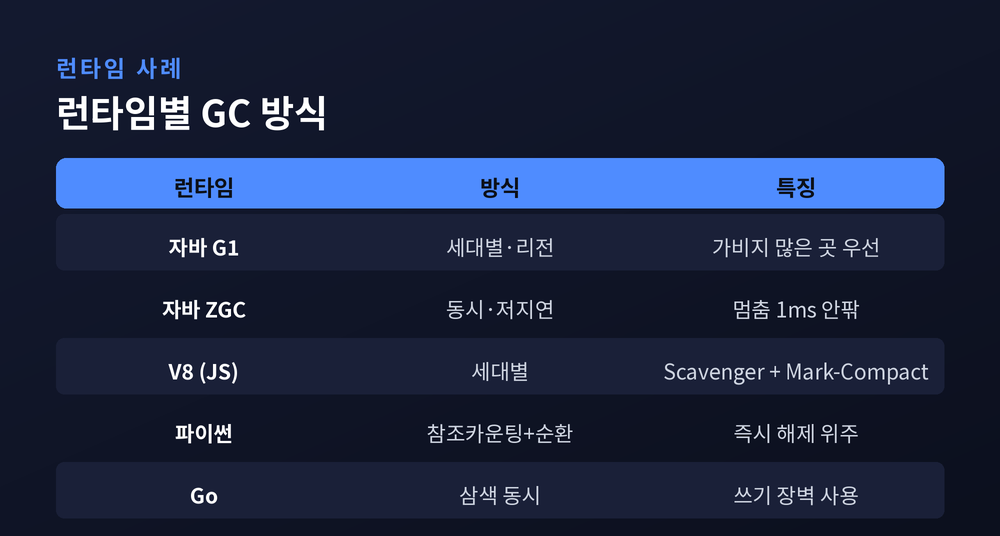

이번 글에서는 가비지 컬렉션이 어떤 원리로 안 쓰는 메모리를 자동으로 회수하는지 정리해 보겠습니다. 참조 카운팅과 추적 방식의 차이, 마크-스윕과 복사 알고리즘, 세대별 수집, 그리고 자바·파이썬·자바스크립트 런타임이 실제로 쓰는 방법까지 차례로 살펴보겠습니다. 먼저 결론부터 말씀드리면, 가비지 컬렉터는 "쓰레기를 찾는" 것이 아니라 "아직 닿을 수 있는 것"을 찾아 남기고 나머지를 버립니다.
프로그램은 실행 중 힙(heap)이라는 메모리 공간에 객체를 끊임없이 만듭니다. 그 객체는 어느 순간부터 어떤 코드에서도 더는 쓰이지 않게 됩니다. 그렇게 버려진 메모리가 가비지입니다.
문제는 "이 객체를 앞으로 쓸 것인가"를 런타임이 미리 알 수 없다는 점입니다. 그래서 기준을 바꿉니다. 판단의 잣대는 쓸모가 아니라 도달 가능성(reachability)입니다.
기준점은 루트(root)입니다. 스택의 지역 변수, CPU 레지스터, 전역·정적 변수처럼 프로그램이 곧바로 접근할 수 있는 참조들이 루트입니다. 여기서 출발해 참조를 따라가 닿을 수 있으면 살아있는 객체, 끝내 닿지 못하면 가비지로 봅니다.
예전에는 이 일을 사람이 직접 했습니다. C나 C++에서는 프로그래머가 free나 delete로 손수 메모리를 돌려줘야 했습니다. 지금은 런타임이 대신합니다. 손으로 할 때 따라오던 메모리 누수, 이미 해제한 메모리를 다시 쓰는 오류, 이중 해제 같은 사고를 줄이기 위해서입니다.
안 쓰는 메모리를 찾는 방법은 크게 두 계열입니다.
첫째는 참조 카운팅(reference counting)입니다. 객체마다 "나를 가리키는 참조가 몇 개인가"를 세는 카운터를 답니다. 참조가 늘면 하나 더하고, 사라지면 하나 뺍니다. 카운트가 0이 되는 순간 그 객체를 즉시 해제합니다.
장점은 분명합니다. 결정적이고 즉각적입니다. 객체가 필요 없어진 바로 그 지점에서 메모리가 회수되니, 언제 정리될지 예측할 수 있습니다.
다만 약점이 하나 있습니다. 순환 참조를 회수하지 못합니다. 객체 A와 B가 서로를 가리키면, 바깥의 누구도 둘을 쓰지 않아도 서로의 카운트가 1로 남습니다. 결국 회수되지 못한 채 메모리에 눌러앉습니다.
둘째는 추적 GC(tracing GC)입니다. 루트에서 시작해 참조를 따라가며 닿는 객체를 모두 표시합니다. 표시된 것은 살리고, 표시되지 않은 것은 버립니다. 이 방식은 순환 참조도 자연스럽게 처리합니다. 서로 얽혀 있어도 루트에서 닿지 못하면 그냥 회수 대상일 뿐입니다.
흥미로운 점은 두 방식이 대립하지 않는다는 것입니다. 파이썬(CPython)은 둘을 함께 씁니다. 평소에는 참조 카운팅이 카운트 0인 객체를 즉시 치우고, 참조 카운팅이 놓친 순환 참조 덩어리만 세대별 순환 수집기가 따로 청소합니다.
추적 GC의 가장 기본적인 알고리즘이 마크-스윕(mark-sweep)입니다. 이름 그대로 두 단계로 움직입니다.

마크(mark) 단계에서는 루트에서 출발해 참조 그래프를 깊이 우선으로 훑습니다. 도달한 객체마다 "마크 비트"를 1로 세웁니다. 처음엔 모두 0입니다.
스윕(sweep) 단계에서는 힙 전체를 훑으며 마크되지 않은 객체를 회수합니다. 살아남은 객체의 비트는 다음 수집을 위해 다시 0으로 되돌립니다.
구현이 단순하고 순환 참조도 다룰 수 있습니다만, 두 가지 대가가 따릅니다. 하나는 수집하는 동안 프로그램을 멈춘다는 점입니다. 다른 하나는 단편화(fragmentation)입니다. 해제된 자리가 힙 여기저기 구멍으로 흩어져, 전체 여유 공간은 넉넉해도 연속된 큰 자리가 없어 큰 객체 할당이 실패할 수 있습니다.
단편화를 풀어내는 영리한 방법이 복사(copying) GC입니다. 1970년 C.J. Cheney가 제안한 방식이 널리 알려져 있습니다.
힙을 크기가 같은 두 반쪽으로 나눕니다. 한쪽만 할당에 쓰고 다른 쪽은 비워둡니다. 수집할 때가 오면, 살아있는 객체만 빈 쪽으로 옮깁니다. 옮기고 나면 두 공간의 역할을 맞바꾸고, 옛 공간은 통째로 비웁니다.
이 방식의 매력은 세 가지입니다. 옮겨 붙이는 과정에서 살아있는 객체가 한쪽에 차곡차곡 모이므로 단편화가 사라집니다. 빈 공간이 한 덩어리라 포인터만 밀면 되는 빠른 할당이 가능합니다. 수집 비용도 힙 크기가 아니라 살아있는 객체의 양에만 비례합니다. 죽은 객체는 아예 건드리지 않기 때문입니다.
대신 절반을 늘 비워둬야 하니 메모리를 두 배로 씁니다. 이 복사의 장점만 취하되 두 배 공간은 피하려는 절충안이 마크-컴팩트(mark-compact)입니다. 표시한 뒤 살아있는 객체를 한쪽으로 밀어 붙여 빈 공간을 하나로 모읍니다.
현대 런타임을 관통하는 전략은 세대별 GC(generational GC)입니다. 그 바탕에는 하나의 관찰이 있습니다.
"대부분의 객체는 젊어서 죽는다."
약한 세대 가설(weak generational hypothesis)이라 부르는 이 경험칙은, 동적으로 만든 객체 대다수가 아주 짧게 살고 곧 버려진다는 것입니다. 반대로 오래 살아남은 객체는 앞으로도 오래 남는 경향이 있습니다.

이 가설을 그대로 설계에 옮깁니다. 힙을 젊은 세대와 늙은 세대로 나눕니다. 새 객체는 젊은 세대에 놓고, 이곳을 자주 그리고 좁게 수집합니다(마이너 GC). 어차피 대부분 이미 죽어 있으니 적은 노력으로 많은 공간을 되찾습니다.
젊은 세대에서 여러 번 살아남은 객체는 늙은 세대로 승격시킵니다. 늙은 세대는 드물게 수집합니다(메이저 GC). 오래된 객체를 뒤지는 일은 비용은 크고 얻는 것은 적기 때문입니다. 힘을 이득이 큰 쪽에 집중하는 셈입니다.
GC가 힙의 일관된 모습을 봐야 하는 순간에는 애플리케이션 스레드를 잠시 멈춥니다. 이 정지 구간을 stop-the-world, 줄여서 STW라 합니다. 자바 가상 머신은 모든 스레드가 안전 지점(safepoint)에 이를 때까지 기다린 뒤 멈춤을 시작합니다.
STW는 응답 지연의 주범입니다. 그래서 현대 수집기는 멈춤을 줄이려 애씁니다. 여러 스레드로 함께 수집하고(병렬), 프로그램이 도는 동안 수집을 함께 진행하고(동시), 수집을 잘게 쪼갭니다(증분).
동시 수집을 안전하게 하려고 삼색 표시(tri-color marking)를 씁니다. 객체를 흰색(아직 안 봄), 회색(봤지만 자식은 아직), 검은색(끝까지 확인)으로 나눕니다. 마크가 끝났을 때 여전히 흰색인 객체가 가비지입니다. 프로그램이 도는 사이 참조가 바뀌어 살아있는 객체를 놓치는 사고는 쓰기 장벽(write barrier)이 막습니다. 위험한 쓰기를 감지해 흰 객체를 회색으로 되돌려 놓는 장치입니다.
원리는 하나지만, 런타임마다 조합이 다릅니다.

자바의 기본 수집기 G1은 힙을 여러 리전으로 쪼개 가비지가 많은 곳부터 수집합니다. 젊은 세대 수집은 여러 스레드로 병렬 처리하고, 전역 마킹은 프로그램과 동시에 진행하되 마무리 단계만 짧게 멈춥니다.
자바의 ZGC는 초저지연을 목표로 합니다. 힙 크기와 무관하게 멈춤 10밀리초 이하를 내걸었고, 실제로는 대개 1밀리초 아래로 떨어집니다. 컬러드 포인터와 로드 장벽으로 프로그램이 도는 중에도 객체를 옮기기 때문입니다.
자바스크립트 엔진 V8의 수집기 오리노코(Orinoco)는 세대별로 나눠, 젊은 세대는 Scavenger가, 힙 전체는 Mark-Compact가 맡습니다. 병렬 Scavenger는 젊은 세대 수집 시간을 워크로드에 따라 20~50% 줄였고, 동시 마킹은 무거운 게임에서 멈춤을 최대 절반까지 낮췄습니다.
파이썬은 앞서 말했듯 참조 카운팅을 앞세우고, 순환 참조만 세대별 수집기가 뒤에서 청소합니다. Go는 삼색 마크-스윕과 쓰기 장벽으로 멈춤을 최소화하는 동시 수집을 택했습니다.
정리하면 이렇습니다. 가비지 컬렉션의 핵심은 언제나 하나입니다 — 루트에서 닿을 수 있는 것만 남기고 나머지는 되돌린다. 참조 카운팅이든 마크-스윕이든 세대별 수집이든, 결국 이 한 문장을 각자의 방식으로 실현할 뿐입니다.
물론 완벽한 방법은 아직 없습니다. 멈춤을 줄이면 처리량이 깎이고, 처리량을 지키면 지연이 늘어납니다. 그래서 런타임마다 저마다의 균형점을 고릅니다.
메모리를 손수 반납하던 시절을 지나, 이제는 그 수고를 런타임에 맡깁니다. 편해진 만큼 원리를 알아둘 가치는 오히려 커졌다고 생각합니다. 내 프로그램이 왜 잠시 멈추는지, 왜 메모리가 출렁이는지, 그 답의 절반은 여기에 있습니다.